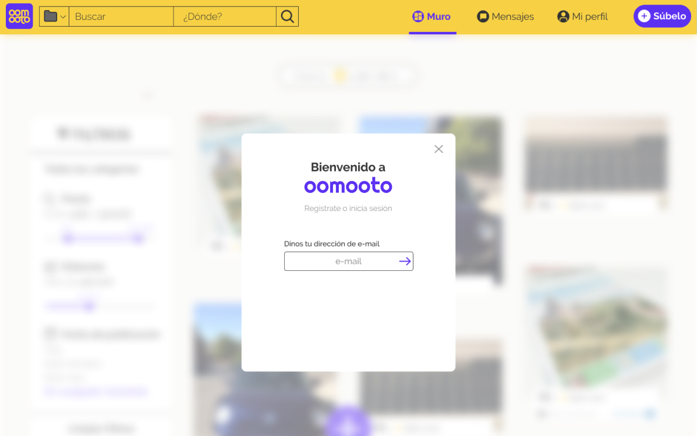
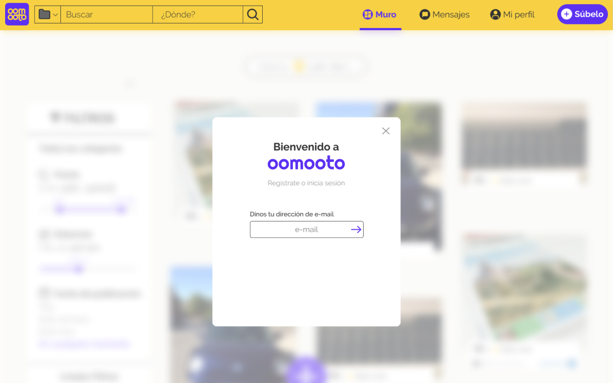

*******
 


Creación de una marca y una plataforma
en sintonía con unos valores y un mercado
Mi labor:
- BRANDING
- DISEÑO UI/UX
.figma .ai .ps
******* se trata de una plataforma de compra-venta de productos entre particulares. Sí, es la idea es muy similar a Wallapop, pero está enfocada a otro mercado diferente.
Precisamente, mi labor principal, a parte de crear toda la interfaz, ha sido la de adaptar el producto al mercado al que se dirige, para lo que realicé un estudio de la cultura visual, las costumbres relacionadas con la tecnología móvil, y el tipo de comportamiento en este tipo de plataformas C2C.